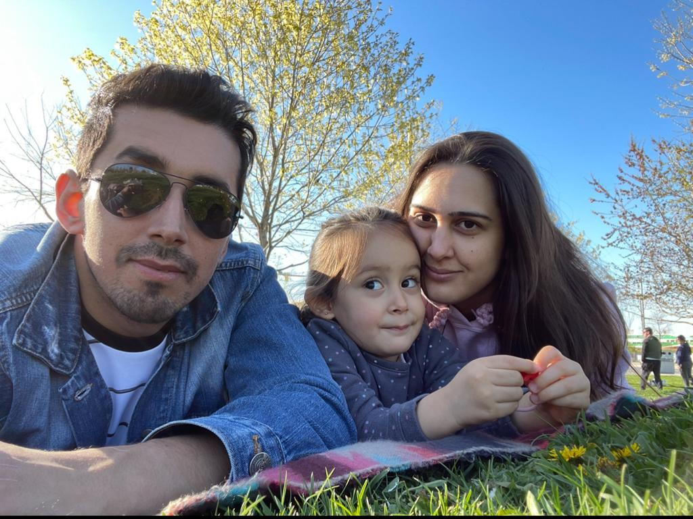
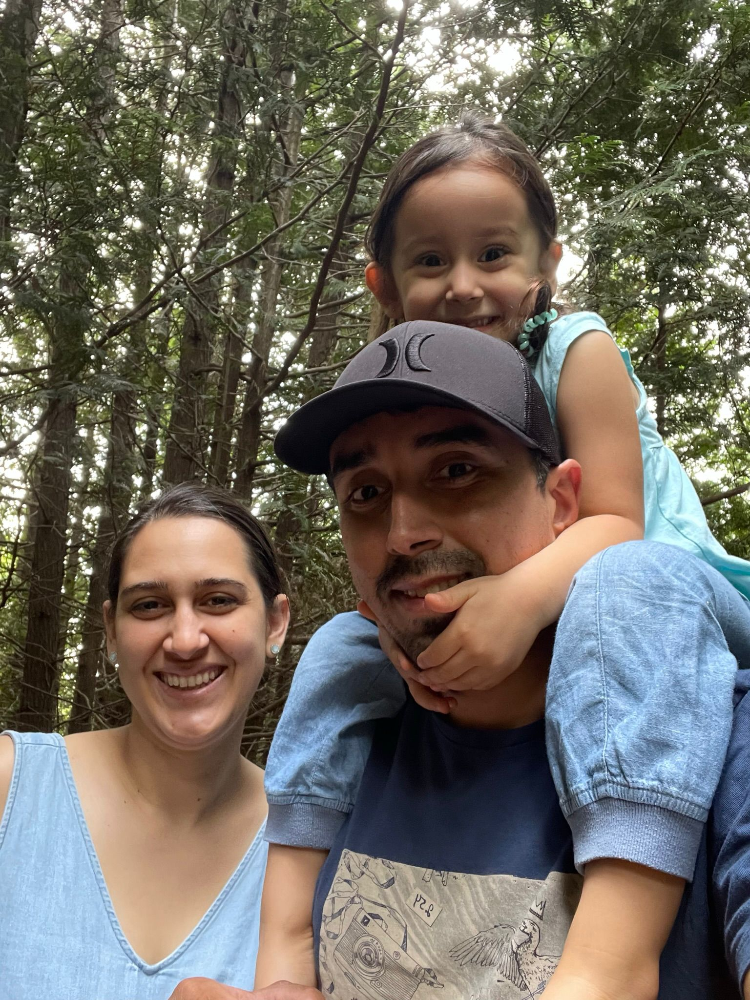
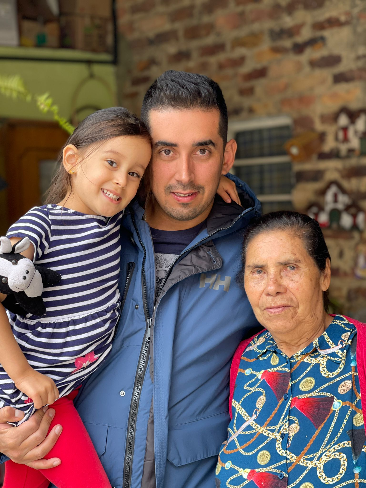
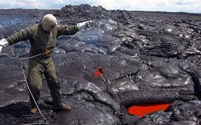
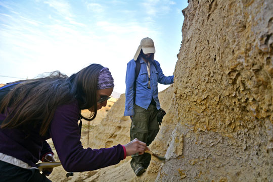

Hi everyone! My name is Andres Rojas. I am 36 years old. I am from Bogota, Colombia altough living in Toronto, Canada. I have been living here for 2 years. I have a beautiful family; I met my wife in my neighborhood back home 11 years ago, but 2 years ago I got married to her. Her name is Cindy Velasco and is 31 years old. I also have a beautiful daughter who is called Anastasia and is 3 years and 10 months. She was born in Toronto in the Sunnybrook hospital. My parents are living in Colombia, they have visited to me a couple of times here in Toronto.
 The best grandmother in the world
This is my grandmother, her name is Ines and is 83 years old. She is very funny, she likes to tell many stories to my daughter, she always takes care of me and loves me since I was born, my grandmother cooks very well and always brings the whole family together in the important holidays, she is the best grandmother in the world
Who am I and what have I studied?
I studied geology. I like my career since a Geologist is a professional who studies the earth, its composition, its evolution and its current processes. Geology is the science that allows the discovery of new mineral and energy resources, as well as helping to understand the phenomena that originated and that continue to shape the planet. My career is fascinating. I really like it. Nowadays, I am doing a specialization in GIS (geographic information systems) to complement my studies.
 